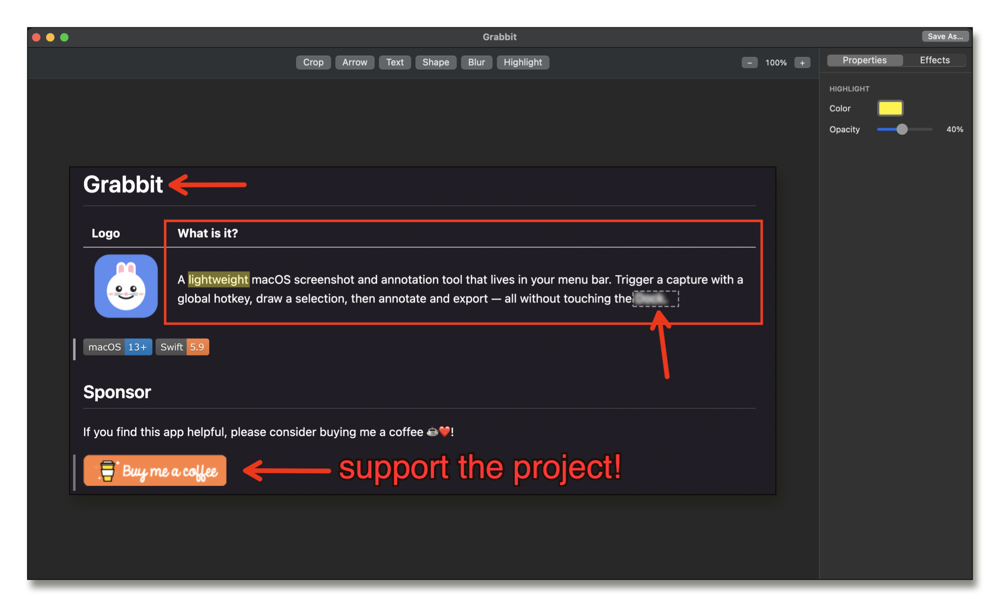
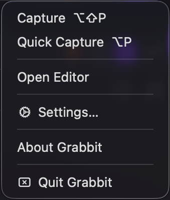
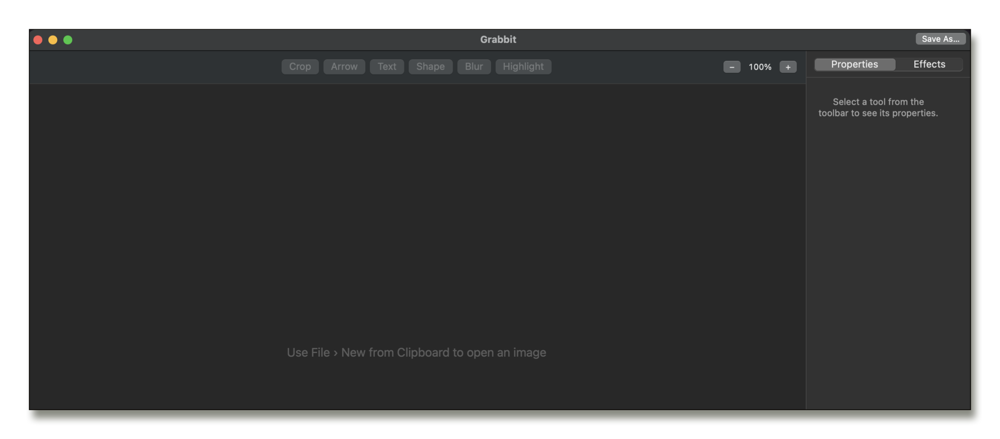
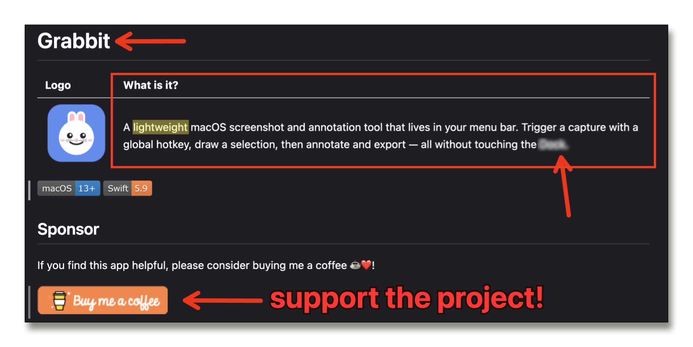
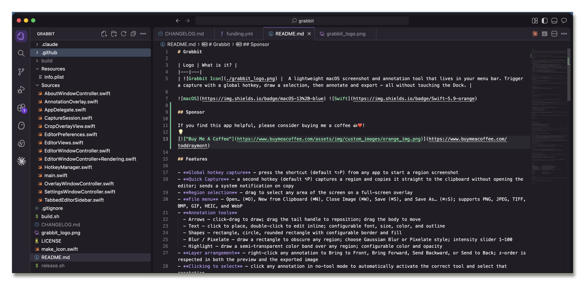

Grabbit is the lightweight, open source macOS screenshot and annotation tool you've been waiting for. All the things you actually use in Snagit. None of the subscription fees or feature creep.

Snagit is great. It really is. But one day I looked at my subscription bill and thought: I use maybe 15% of its features. Capture a region. Add an arrow and some text. Blur something sensitive. Done. That's it. That's all I need.
So I built Grabbit — a focused, no-frills macOS screenshot tool that does exactly what I need and nothing more. It lives in your menu bar, launches with a hotkey, and gets out of your way. No cloud sync. No AI features you'll never use. No feature roadmap driven by enterprise sales. Just a clean, fast and free tool that respects your time and your wallet.
It's open source because great tools should be. And it always will be.
Press ⌥⇧P from anywhere — Grabbit takes over, you drag your selection, and the editor opens instantly. A second hotkey ⌥P sends straight to clipboard, skipping the editor entirely.

Draw precise arrows with adjustable weight and color. Drag the tail handle to reposition the start point, or drag the body to move it entirely.
Click to place, double-click to edit inline. Choose from 13 system fonts, size 8–72pt, with configurable text color and outline weight.
Rectangles, circles, rounded rectangles. Set border weight (0–50pt), border color, and fill color. Fully transparent fills supported for callout boxes.
Gaussian Blur or Pixelate — draw a rectangle, crank the intensity to 100 and make that API key completely unreadable. Live preview, exactly what you see is what exports.
Draw semi-transparent color bands (5–85% opacity) over anything worth calling out. Yellow by default, but every color is yours.
Toggle a border or drop shadow onto your image with full control: weight, color, X/Y offset, blur, and opacity. Make your screenshots pop off the page.
Trim your image with undo support. Drag the crop region, confirm, and Grabbit remembers — hit ⌘Z and you're back where you started.
Right-click any annotation to Bring Forward, Send Backward, Bring to Front or Send to Back. Full layer stacking respected on export.
Pinch, scroll with ⌘, or use the +/− buttons. Annotate at 4× and export at full resolution — pixel-perfect every time.

The editor — clean, focused, ready. Everything you need, nothing you don't.
Annotating in real time — arrows, text, shapes, and blur all live on the canvas.

Grabbit's own GitHub page being annotated with Grabbit. Very meta. Very useful.
Hit ⌥⇧P from any app. A full-screen capture overlay appears instantly. Drag to select your region and release.
The editor opens with your capture. Add arrows, text, shapes, blur, highlights. Layer them, move them, undo them. Properties update live in the sidebar.
Hit ⌘C to copy straight to clipboard, or ⌘S to save as PNG, JPEG, or TIFF. Done. The whole thing takes seconds.

~5,000 lines of pure Swift + AppKit. No external dependencies. No Xcode project file — just a single bash build.sh. Read the source, learn from it, improve it.
Genuinely free. No catch. No "free tier with limits," no credit card required, no freemium upsell. Todd built Grabbit because he was tired of paying for Snagit to use 10% of its features. If you find it useful and want to say thanks, there's a Buy Me a Coffee link — but it's completely optional.
macOS's built-in tools are great for raw captures, but they're not annotation tools. The moment you need to add an arrow, blur something sensitive, drop a text label, or put a highlight over a key area — you're out of options. That's the exact gap Grabbit fills, without the $39/year Snagit asks for the privilege.
A few reasons. First, the Apple Developer Program costs $99/year — which directly contradicts "free forever." Second, Grabbit's entire build process is a single bash build.sh command; adding code signing, notarization, and App Store review cycles would add real ongoing friction to what is intentionally a zero-ceremony project. Finally, the screencapture CLI fallback used on macOS 13 Ventura can't run inside an App Store sandbox. Grabbit ships as a pre-built binary zip: download, extract, and go.
Yes — Grabbit isn't notarized (that costs money and requires the $99/year Apple dev account). To open it the first time, right-click the app and choose Open, then confirm. Alternatively, the README walks you through removing the quarantine attribute with a single Terminal command. The source code is fully public — you can read every line and build it yourself if you prefer.
Zero network requests. Zero accounts. Zero telemetry. Grabbit is a fully local app — it only touches the network if you're downloading a release from GitHub. All preferences are stored in macOS UserDefaults on your machine. Your screenshots never leave your computer.
macOS 13 Ventura or later. On macOS 14 Sonoma+, Grabbit uses ScreenCaptureKit for a clean, permission-aware capture pipeline. On Ventura, it falls back to the screencapture CLI — either way you'll be asked to grant Screen Recording permission the first time you capture.
Yes. Open Settings from the menu bar icon and press your preferred key combo in the hotkey recorder. Grabbit validates that you've included at least one modifier key (⌘, ⌥, or ⌃) and saves the binding immediately. Both the Capture and Quick Capture hotkeys are independently configurable.
Absolutely, and it's refreshingly simple. Clone the repo, run bash build.sh, and you've got a binary. No Xcode project file, no SPM, no CocoaPods. Just swiftc and a handful of system frameworks. See the README for the exact steps.
Maybe — open an issue on GitHub and make the case! The core philosophy is to stay lean: if a feature is something 80%+ of users would reach for regularly, it belongs in Grabbit. If it's a power feature that makes the UI more complex for everyone else, it probably doesn't. The whole point is that it's NOT trying to be Snagit.
Grabbit is a personal project. If it saves you $40/year and 10 minutes of frustration, consider buying me a coffee. Your kind monetary support is appreciated and helps pay for tokens so that I can keep building. It genuinely helps keep the project alive.